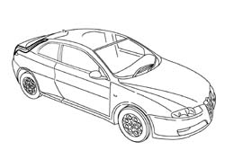
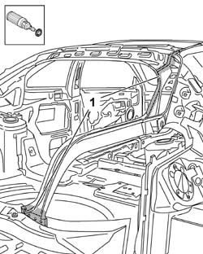
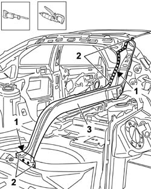
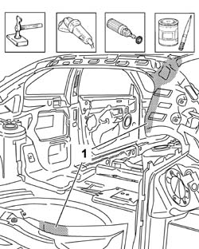
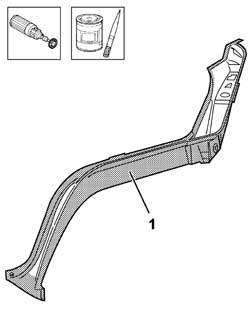
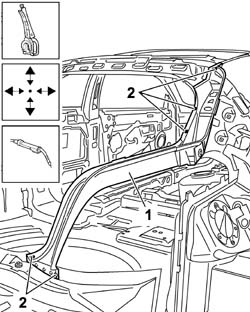
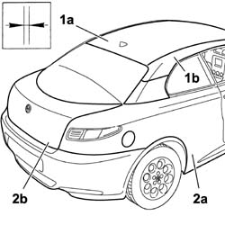
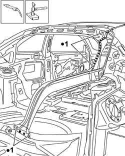
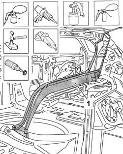

7210B65 REAR PILLAR (WING INTERIOR)
- Path
- Procedures > 72 PANELS AND FRAME > 7210 REMOVING REFITTING > 7210B STRUCTURE ELEMENTS-CENTRAL AND REAR PART > 7210B65 REAR PILLAR (WING INTERIOR)
- Kind
- repair procedure (removal / refitting; the operation number is the code)
- Applies to
- all engines; all production periods
- Interactive page
- https://sloeber94.github.io/elrnDB-aGt/en/#/125002045
Applies to: all engines; all production periods
 Removing
Removing
 Refitting
Refitting- Op. 7210E52 REAR WING (1), LH OR RH
- Op. 7210E56 TAIL-GATE
- Op. 7210E28 ROOF PANEL
- Op. 7210E34 ROOF PANEL/SIDE PANEL CONNECTION PROFILE-MOULDING
- Check that the components connected are not distorted by checking the bodyshell alignment measurements using suitable equipment (gauges, templates or jigs).
- Straighten the body as necessary.

Applies to: all engines; all production periods
- Use the rotary brush to clean the edges of the panel to highlight the spot welds.

Applies to: all engines; all production periods
- Use a hack sawing machine following the cutting line shown in the diagram.
- Use the chamfering machine on the spot welds shown.
- Use the hammer and chisel and remove the spot welds chamfered previously.
3. Remove the outside rear pillar.

Applies to: all engines; all production periods
- Straighten the edges of the panel using a hammer and dolly block.
- Remove the spot weld residues using a disc grinder.
- Use a rotary brush to clean the areas treated previously.
- Apply electro-galvanizing paint.

Applies to: all engines; all production periods
- Work at the bench and remove the anti-corrosion treatment from the entire perimeter of the inside and outside of the replacement part using a rotary brush.
- Apply electro-weldable paint to the edges treated previously.

Applies to: all engines; all production periods
Refitting
Removing- Position the inner rear pillar correctly in the vehicle and secure it using self-locking clamps.
- Tack the replacement part by making a few spot welds.

Applies to: all engines; all production periods
- Fit the roof (1a) and the roof connector (1b).
- Position the right rear wing (2a) and position the tailgate (2b), then check the alignment and the surrounding gaps.
- Remove the components fitted previously.

Applies to: all engines; all production periods
- Use a spot welder in the areas shown in the diagram.
- Correct any distortions to the panel using a hammer and dolly block.

Applies to: all engines; all production periods
- Use a disc grinder to level the welds.
- Use a rotary brush to clean the areas welded previously.
- Apply anti-oxidant protection to the areas involved in the welding.
- Proceed with the painting stage.

Applies to: all engines; all production periods
Op. 7210E34 ROOF PANEL/SIDE PANEL CONNECTION PROFILE-MOULDING